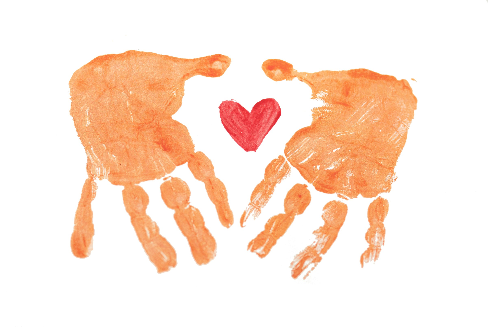

Ezechukwu Adachukwu
Computer Science, 200 Level
IPA HACKATHON SUBMISSION

TEAM
Covenant University
Computer Science, 200 Level
Biotechnology, 200 Level
Computer Science, 200 Level
Computer Science, 200 Level
03 / CONTEXT
This project introduces an innovative approach that combines user needs, practical implementation, and scalable design.
Across Nigeria and all over the world, governments, NGOs, organizations and individuals set up forms of aid in order to improve the livelihoods of those in need. But just because these initiatives exist does not mean that they are accessible to the common person.
Many low income families, farmers and youths are not aware of the opportunities that would benefit them and aid their current situation. Also information is scattered across various platforms, different social media, websites and channels and the specific programs people do know of may not be suitable for them.
Graduation Match aims to solve the gap between these opportunities and people who need then by understanding an individual’s situation and need, based on information they release about themselves, and match them with appropriate programs and resources.
04 / THE CHALLENGE
We identified a core challenge that limits efficiency, accessibility, and long-term sustainability.
Nigeria has over 191,000 registered non-governmental organizations (NGOs) according to data from the Corporate Affairs Commission. These groups operate extensively in healthcare, education, human rights, environmental protection, and poverty alleviation. At the same time there are over 133 million people living in poverty in Nigeria alone. While not all have access to proper technology, roughly seventy percent have access to a mobile phone.
Development and upskilling programs have different eligibility requirements, application processes and their information is mostly transferred and widespread. For people with low literacy, this could be a barrier to navigating these systems and applying to these opportunities.
On the side of organizations, while social media exists and physical campaigns can be done, finding the right individuals who can properly benefit from their programs may be difficult.
This brings the problem: resources are out there, but the connection between those who need it and those who provide them is almost nonexistent.
05 / THE SOLUTION
Graduation Match is a platform that helps people find support programmes they may qualify for. Nigeria already has programmes for agriculture, training, employment, finance, business and social support, but the information is often scattered across different organisations and platforms. For someone looking for help, knowing what is available to them can be difficult.
The idea is simple: tell us a little about your situation, and we help you find the programmes that may fit. A user could provide their state or LGA, age, occupation, income range, household size and, where relevant, information about their farm or business. We then compare that profile with information from verified programmes and show the user relevant options, including their requirements, what they offer and how to apply.
AI is part of the platform, but it is not making the final eligibility decision. The matching itself will use the requirements set by each programme. AI will mainly help users understand their results and ask questions about the programmes.
06 / DELIVERY
07 / GROWTH
For scalability we're looking at two deciding factors: Can this work beyond the prototype? and can it keep operating without becoming too expensive and dependent on us or the development team.
The system would initially be piloted with a small number programs and designated to targeted communities. Once this run is validated, feedback collected and improvements made, it can then be expanded to additional programs, states, and eventually other countries facing similar challenges.
One thing to note is that the system does not require organizations to replace their existing processes, rather it is a way for them to integrate the tools they already use for their programs into our platform in order to improve beneficiary-to-program matching, identify gaps in outreach, and efficiently target available resources.
In the area of beneficiary-to-program matching, AI would be used to identify patterns, flag possible barriers, and verify evidence. The program staff/organization themselves make the final decisions.
Long-term sustainability would come through partnerships with NGOs, government agencies, development organizations, and research institutions, plus a model where small organizations have access to basic monitoring tools and larger programs pay for advanced analytics and reporting.
08 / OUTCOMES
The Graduation Match platform is expected to alleviate poverty by increasing the accessibility of the vulnerable to suitable development and aid programmes. As a phone application, the platform will impact vulnerable community members with phones (constituting about 70% of the 133 million Nigerians living in poverty).
In the short term, we aim to improve accessibility to poverty alleviation initiatives. In the medium term, we intend for the platform to serve as a reliable means for vulnerable populations to receive education, economic empowerment, and aid. In the long term, we expect Graduation Match to facilitate sustainable change by reducing poverty rates.
We intend to monitor progress through survey forms and follow-up with impact over 3 - 12 months.
09 / RESOURCES
For the hackathon, we can build a working prototype without a large upfront budget using free hosting, database, and AI/API tiers. WhatsApp, SMS and USSD can be added later.
After the hackathon, we estimate ₦1–2.4 million for two developers over roughly two months, with technical maintenance estimated at ₦150,000–₦600,000 per year.
10 / CLOSING
CONCLUSION
Overall, this initiative offers a strong path to meaningful value creation and sustainable progress.
TEAM AND ROLES
Our multidisciplinary team brings complementary skills in strategy, product, technology, and implementation.